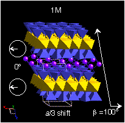
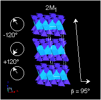
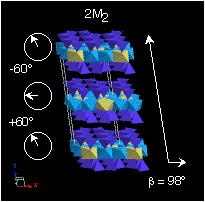
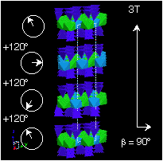

Mica Polytypes
The following is abstracted from Audrey C. Rules slide-set publication
on Mica Polytypes available from the Clay
Minerals Society.
A good reference is also Bailey, S.W. (1984) Crystal chemistry of the
true micas. In S.W. Bailey, Ed. Micas, 13, p. 1-60. Mineralogical Society
of America, Chelsea, Michigan.
1M polytype involves a single layer stack (one-layer repeat)
with an a/3 shift in the same direction. This polytype is common
in nature.

2M1 polytypes involve a +120° rotation
followed by a -120° rotation.. This makes a two-layer monoclinic unit
cell. This is common in the diocathedral structures (e.g., muscovite
and illite).

2M2 polytypes involve a +60° rotation followed
by a -60° rotation.. This makes a two-layer monoclinic unit cell. This
is uncommon in nature, but seen in lepidolites and phengites.

3T polytypes involve a +120° rotation followed by
another +120° rotation. This makes a three-layer Trigonal unit cell.
This is common in both the di- and trioctahedral structures (e.g.,
muscovite and illite). Another polytype involves a -120° rotation followed
by another -120° rotation.. These polytypes are, by definition, enatiomorphs
and X-ray diffraction does not easily distinguish the two types.
